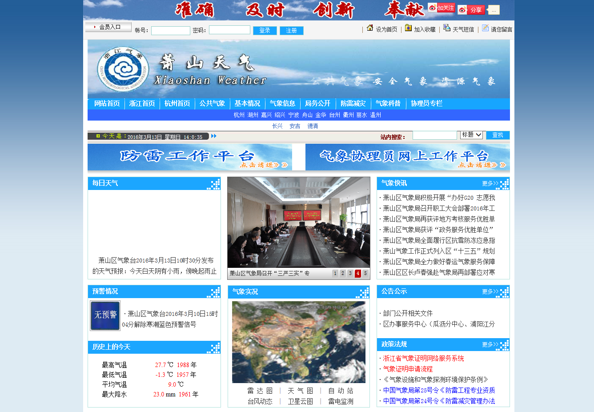
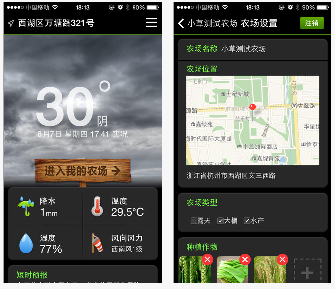
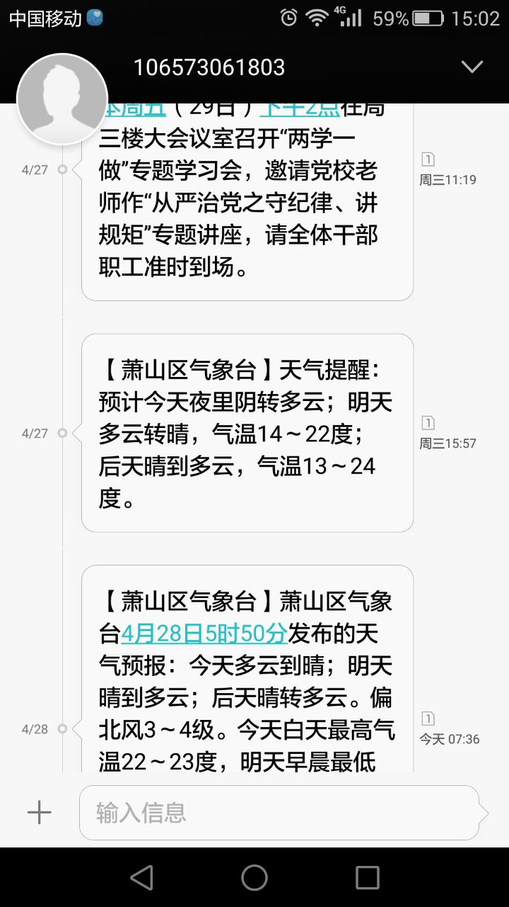
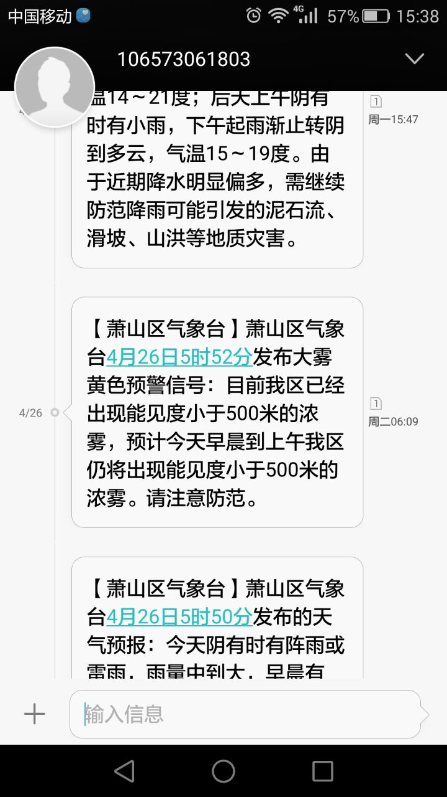
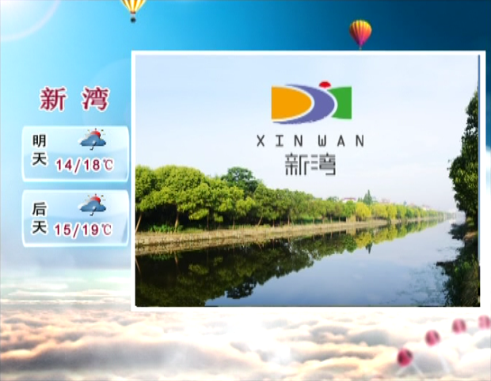
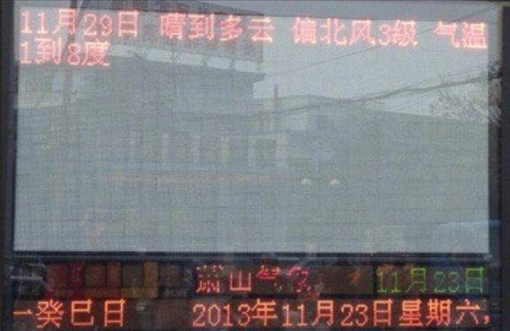

1.区气象服务网站
“萧山气象网”
服务内容：
各类天气预报预警信息、各类气象监测信息、气象服务信息、政府信息公开、防雷减灾办事指南、气象知识科普、网上业务咨询等。
查看途径：
http://www.xsqx.com.cn/

2.手机客户端
“萧山农业气象”
介绍：
为满足农业大户对天气实况、未来天气趋势、未来气候预测的需求而开发的智能手机客户端软件，免费提供给公众使用，目前支持苹果及安卓移动终端设备。
服务内容：
结合手机定位功能，提供定位点附近的天气监测与预报信息（短期预报、中期预报、气候预测等）查询服务，根据用户提供的农场位置、农场类型、种植作物提供农事建议。
软件下载：
各大电子应用市场免费下载。

3.官方微博
“萧山气象”
服务内容：
用生动形象的语言提供萧山短期预报以及未来天气趋势，并提供工作生活建议以供参考；还提供气象灾害预警，并跟踪灾害性天气过程，根据天气变化随时在微博发布相关提示信息。
获取途径：
新浪微博http://weibo.com/xsqx
4.官方微信
“萧山气象”、“萧山天气”、“萧山预警发布”
服务内容：
用生动的语言与形象化的图片提供萧山短期预报以及未来天气趋势，并提供工作生活建议以供参考；还提供气象灾害预警，并跟踪灾害性天气过程，根据天气变化随时在微信发布相关提示信息。
获取途径：
在微信平台搜索号码“萧山气象”（“萧山天气”、“萧山预警发布”）、搜索公众账号“萧山气象”（“萧山天气”、“萧山预警发布”）或扫描“萧山气象”（“萧山天气”、“萧山预警发布”）二维码。
手机短信
日常天气短信
服务内容：
用简洁的语言提供萧山短期预报并定时发送，可分别定制早晚天气预报信息。
获取途径：
向所属的通信运营商定制日常天气短信。
高级别预警短信
服务内容：
当发布高级别预警信号（如红色预警信号）时，通过全网发布预警和相关防御指引信息，内容包括气象灾害来临时间、地点、可能造成的危害。
获取途径：
萧山区气象局通过移动、电信、联通、华数等基础运营商短信平台，分别向其各自在网用户及时、准确、无偿的发布预警短信。


6.电视
“萧山气象”、“萧山生活气象”
服务内容：
区气象局每天更新制作2个视频类气象节目，包括24、48小时天气、气温与服务建议，AQI环境指数、舒适度指数、火险指数、空气质量扩散条件、行车安全指数、洗车指数等。通过传统电视频道播出。当有预警信号发布时，15分钟以内，所有本地电视频道播出预警信号，并滚动播出气象预警信息的含义和应对措施。
获取途径：
“萧山气象”：萧山电视台19:50与22:26播放。
“萧山生活气象”：萧山生活电视台18:30与21:00播放。

7.广播电台
整点气象
服务内容：
未来三天天气、风向风力、最高最低气温，以及可能出现的雷电、霜冻、大雾等灾害性天气。
获取途径：
萧山人民广播电台（FM107.9）整点气象节目，每天6时、11时、17时向大众播放。
“开心方向盘”连线
服务内容：
每天两次在上下班高峰由业务人员连线天气提示、日常天气广播、灾害性天气预警及提示、健康、交通、旅游气象信息及提示等。
获取途径：
萧山人民广播电台（FM107.9）“开心方向盘”节目，时间为夏季工作日（周一到周五）17:15与17:45，冬季工作日16:45与17:15向大众播放。
8.报刊
萧山日报
服务内容：
今天天气、风力、今天最高气温和明天最低气温等。
获取途径：
通过萧山日报查阅天气预报。
9.气象信息显示屏
服务内容：
每天6时、9时、11时、14时、17时发布最新预报信息，主要包括短临预报、短期预报和中期预报等。
获取途径：
观看放置在各处的气象信息显示屏。

10.咨询电话
96121气象咨询电话
服务内容：
每天6时、9时、11时、14时、17时发布最新预报信息，主要包括短临预报、短期预报、中期预报、上下班预报、景区预报、能见度预报、生活指数预报、潮汐预报。
获取途径：
拨打96121气象咨询电话。
气象证明申请电话
服务内容：
开具由气象灾害引起的各类相关事件的气象灾害证明。
获取途径：
拨打82899285（区办事中心）、83502013（瓜沥办事中心）、82287011（临浦办事中心）、82987911（大江东办事中心办事中心）。
气象资料申请电话
服务内容：
咨询相关研究、论证项目等有关气象资料获取方式及收费情况，咨询专项服务、定点服务相关流程等。
获取途径：
拨打82721092咨询电话。
活动预约电话
服务内容：
“3.23”气象日科普活动、中小学生气象科普展等相关活动的预约与咨询。
获取途径：
拨打82734511咨询电话。